<div class="top-nav"  id="top-nav" ng-show="showTopNavigator">
    <div class="left-menu">
        <ul class="nav-left">
            <li class="logo">
                <a class="flex-center" ng-click="$ctrl.goHome()">
                    
                </a>
            </li>
            <li ng-if="enableHomeHz" ng-click="$ctrl.hideNG2Page()" style="margin:-4px 0 0 20px"><a class="flex-center" ui-sref="homePageNew"></a></li>
            <li ng-if="enableSoftwareAnalysisHz" class="nav-item" ng-mouseenter="$ctrl.menuToggle('#poorGis_analysis_nav','in')"
                ng-mouseleave="$ctrl.menuToggle('#poorGis_analysis_nav','out')">
                <a class="flex-center"><span class="flex-center">软采分析</span></a>
                <ul id="poorGis_analysis_nav" class="nav-2rd-menu">
                    <li ng-click="$ctrl.hideNG2Page()" ng-if="enablePoorCoverageAreaAnalysisModuleHz"><a class="flex-center" ui-sref="poorAreaGis">弱覆盖区域GIS分析</a></li>
                    <li ng-click="$ctrl.hideNG2Page()" ng-if="enablePoorCoverageAreaTrendAnalysisModuleHz"><a class="flex-center" ui-sref="poorAreaTrend">弱覆盖区域趋势分析</a></li>
                    <li ng-click="$ctrl.goNG2Page('softData')" ng-if="enableSoftMiningPoorAreaAnalysisModuleHz"><a class="flex-center">软采质差小区分析</a></li>
					<!--<li><a class="flex-center">上行高干扰区域GIS分析</a></li>
					<li><a class="flex-center">网络结构区域GIS分析</a></li>
					<li><a class="flex-center">过覆盖区域GIS分析</a></li>
					<li><a class="flex-center">重叠覆盖区域GIS分析</a></li>
					<li><a class="flex-center">方向角错误分析</a></li>
					<li><a class="flex-center">高上行丢包率分析</a></li>
					<li><a class="flex-center">高下行丢包率分析</a></li>
					<li><a class="flex-center">低UL-SINR分析</a></li>
					<li><a class="flex-center">模三干扰分析</a></li>-->
                </ul>
            </li>
            <li ng-if="enableComplaintAnalysisHz" class="nav-item" ng-mouseenter="$ctrl.menuToggle('#complaint_nav','in')"
                ng-mouseleave="$ctrl.menuToggle('#complaint_nav','out')">
                <a class="flex-center"><span class="flex-center">投诉分析</span></a>
                <ul id="complaint_nav" class="nav-2rd-menu">
                    <li ng-click="$ctrl.hideNG2Page()" ng-if="enableComplaintLabelAnalysisModuleHz"><a class="flex-center" ui-sref="complaintLabel">投诉标签分析</a></li>
                    <li ng-click="$ctrl.hideNG2Page()" ng-if="enableComplaintRankingAnalysisModuleHz"><a class="flex-center" ui-sref="complaintRanking">投诉排行分析</a></li>
					<li ng-click="$ctrl.hideNG2Page()" ng-if="enableComplaintDataImportModuleHz"><a class="flex-center" ui-sref="complaintDataEntry">投诉数据录入</a></li>
                </ul>
            </li>
			<li ng-if="enableSpecializedAnalysisHz" class="nav-item" ng-mouseenter="$ctrl.menuToggle('#userDefinedArea_nav','in')"
				ng-mouseleave="$ctrl.menuToggle('#userDefinedArea_nav','out')">
				<a class="flex-center"><span class="flex-center">专题分析</span></a>
				<ul id="userDefinedArea_nav" class="nav-2rd-menu">
					<li ng-click="$ctrl.hideNG2Page()" ng-if="enableUserDefinedAreaAnalysisModuleHz" ><a class="flex-center" ui-sref="userDefinedArea">自定义区域分析</a></li>
					<li ng-click="$ctrl.hideNG2Page()" ng-if="enableIndicatorsDailyBulletinModuleHz" ><a class="flex-center" ui-sref="indicatorsDailyBulletin">指标每日短信通报</a></li>
					<li ng-click="$ctrl.hideNG2Page()" ng-if="enableAutomaticGenerationReportsModuleHz" ><a class="flex-center" ui-sref="automaticGenerationReports">分析报告自动化生成</a></li>
				</ul>
			</li>
			<!--<li class="nav-item" ng-mouseenter="$ctrl.menuToggle('#businessQuality_nav','in')"
				ng-mouseleave="$ctrl.menuToggle('#businessQuality_nav','out')">
				<a class="flex-center"><span class="flex-center">业务质量</span></a>
				<ul id="businessQuality_nav" class="nav-2rd-menu">
					<li><a class="flex-center" ui-sref="businessIndicatorTrend">业务指标趋势对比分析</a></li>
				</ul>
			</li>-->
			<li class="nav-item" ng-mouseenter="$ctrl.menuToggle('#permission_management','in')"
                ng-mouseleave="$ctrl.menuToggle('#permission_management','out')">
                <a class="flex-center"><span class="flex-center" ng-click="$ctrl.goGarnet()">权限管理</span></a>
            </li>
        </ul>
    </div>
    <div class="right-btn-list" style="padding-right:10px;">
		<span class="flex-center" style="color: whitesmoke;" ng-bind="userName"></span>
        <div class="nav-icon">
            <a class="flex-center">
                <i class="fa fa-power-off fa-lg" aria-hidden="true" ng-click="$ctrl.logout()"></i>
            </a>
        </div>
        <!--<div class="nav-icon">
            <a class="flex-center" ng-click="$ctrl.goGarnet()" target="_blank">
                <i style="color:#fff" class="fa fa-cog fa-lg" aria-hidden="true"></i>
            </a>
        </div>
        <div class="nav-icon">
            <a class="flex-center" ui-sref="homePageNew">
                <i style="color:#fff" class="fa fa-book fa-lg" aria-hidden="true"></i>
            </a>
        </div>
        <div class="nav-icon">
            <a class="flex-center"
               ui-sref="mapPage"
            >
                <i style="color:#fff" class="fa fa-info-circle fa-lg" aria-hidden="true"></i>
            </a>
        </div>-->
		<a class="controllerTop">
			<i class="fa fa-angle-up" aria-hidden="true" id="chevron_up" ng-if="topSelect===1" ng-click="$ctrl.shrinkageTop()"></i>
			<i class="fa fa-thumb-tack" aria-hidden="true" id="thumb-tack" ng-if="topSelect===2" ng-click="$ctrl.fixedTop()"></i>
		</a>
    </div>
</div>
<button id="triggerBtn" style="display:none" ng-click="$ctrl.triggerTop()">123</button>
